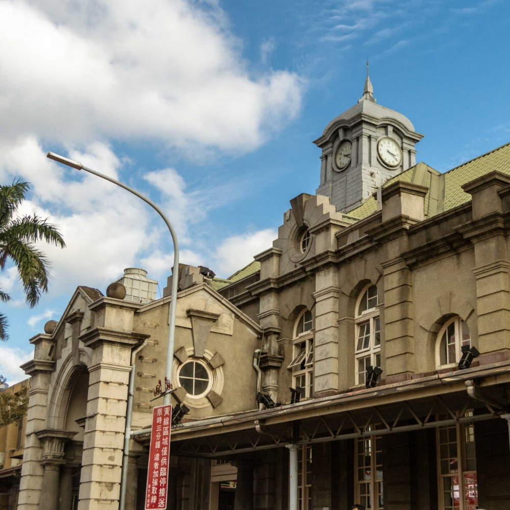

部落格

光 ~ の 設計角落
始於2007年，設立於Yahoo!Blog，讓小學的我擁有無限創作的設計角落；
2011年移至痞客邦，2016年開始使用Wordpress架站。
風的城市：新竹

新竹 Hsinchu
2016/02/18 正式上線，原為學校的作業，修改後放上來，希望讓更多人認識新竹這座美麗風都。
魚的故事：梁靜茹

梁靜茹 FishLeong
預計2016年7月上線，拖了三年終於做完的網站。
從15歲開始就被她的歌聲所吸引，17歲開始為她的歌聲而心醉。
關於本站
Guand.me
成立於2016/2/18，希望有一個可以代表我個人的網站，所以這地方就誕生了。
網站設計是採最簡單明瞭且直覺的風格，讓人可以很輕鬆的閱讀這裡的資訊。
永久網址 guand.me，VPS 為 Digital Ocean。
- 2016/02/18：正式上線。
- 2016/02/20：本站開始採SSL安全認證連線（https）。
- 2016/03/03：新增【海報作品集】頁面。
- 2016/05/21：新增【梁靜茹FishLeong】頁面，但未開放連結。
- 2016/06/08：網站程式碼翻新；統一圖片大小；首頁新增楓葉圖片；【海報作品集】更名為【平面設計】；新增【其他】頁面。
- 2016/06/16：更新部份文字敘述以及文字大小；解決電腦瀏覽器在載入頁面時會有隱藏的內容先閃爍出現的問題。
本站目前已知問題：使用FireFox瀏覽本站會有呈現效果上的問題，但不影響內容。